Sou estudante de Análise e Desenvolvimento de Sistemas e desenvolvedor Full Stack com experiência em projetos utilizando Java Spring no backend, React no frontend e bancos de dados relacionais como MySQL e PostgreSQL. Tenho conhecimento em Git para controle de versões e estou sempre em busca de aprender novas tecnologias para melhorar minhas habilidades e entregar soluções de qualidade.
Java
Spring Boot

Thymeleaf
React
JavaScript
HTML
CSS
Git
GitHub
PostgreSQL
MySQL
Este é um sistema de achados e perdidos desenvolvido para o IFPI, com o objetivo de otimizar o controle e a devolução de documentos perdidos no campus. A aplicação foi construída com Spring Boot no backend e HTML, CSS e JavaScript puro no frontend, utilizando banco de dados PostgreSQL. O sistema permite o registro de documentos encontrados, a busca por itens perdidos e o gerenciamento eficiente dos processos de devolução, garantindo praticidade e segurança para estudantes e servidores do IFPI.
 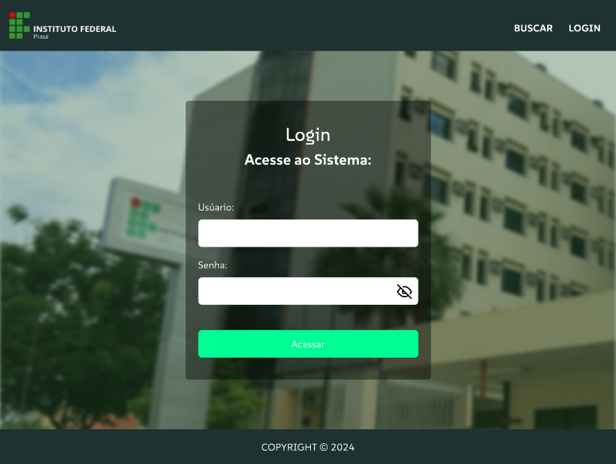
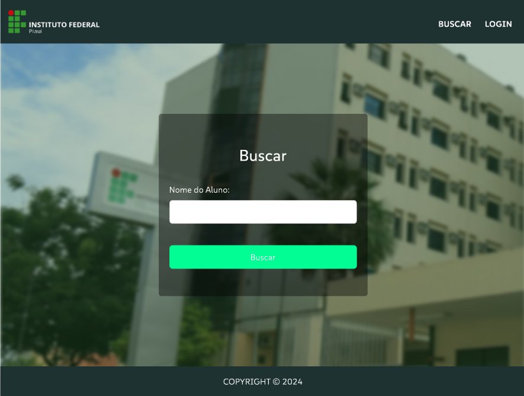
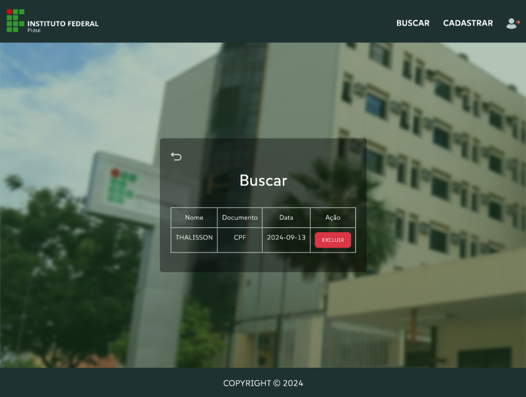
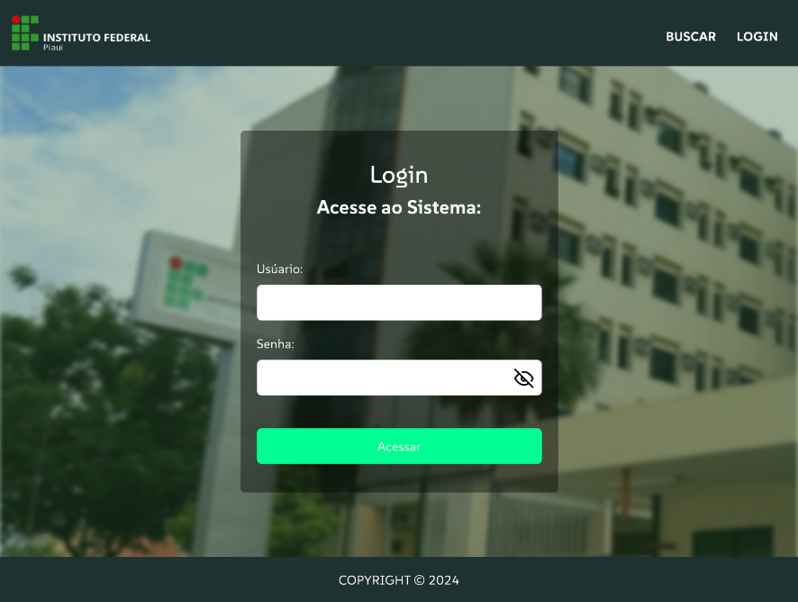
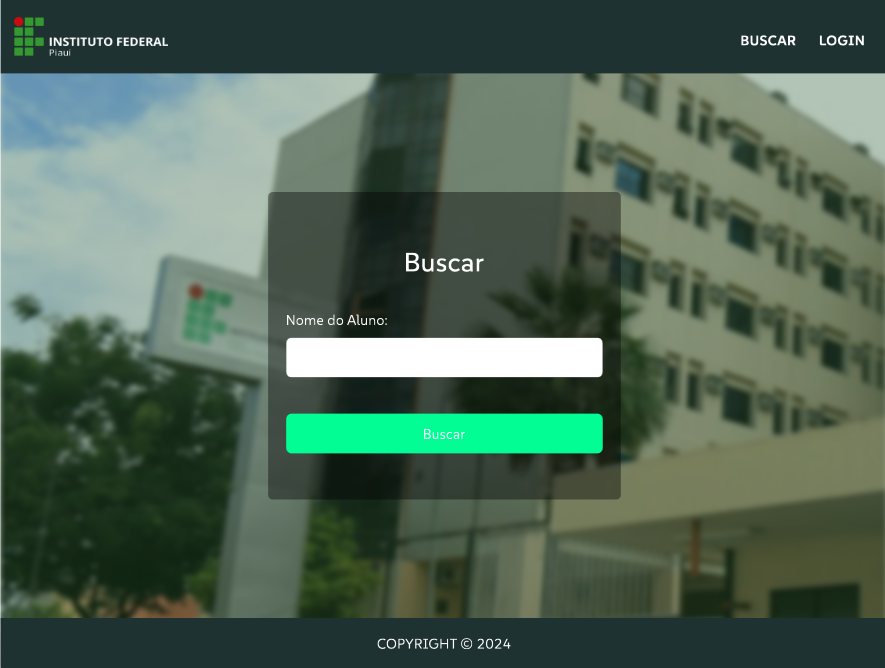
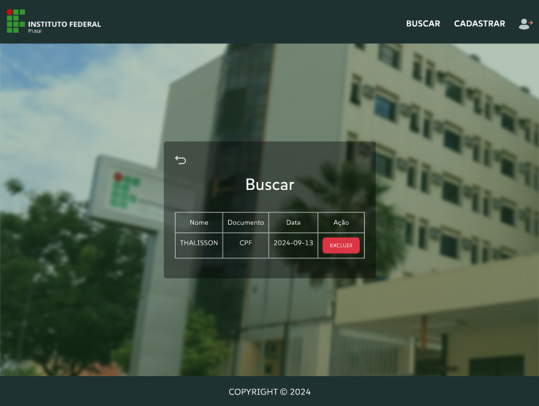
O "Maravi" é um projeto de aplicação criado como um mostruário digital para uma micro loja de doces. Focada na experiência do usuário, a plataforma foi construída utilizando HTML, CSS e JavaScript puros, além do poderoso framework Tailwind CSS, que proporcionou uma interface moderna e totalmente responsiva. O sistema oferece uma navegação intuitiva, permitindo que os clientes visualizem os produtos de maneira clara e agradável.
 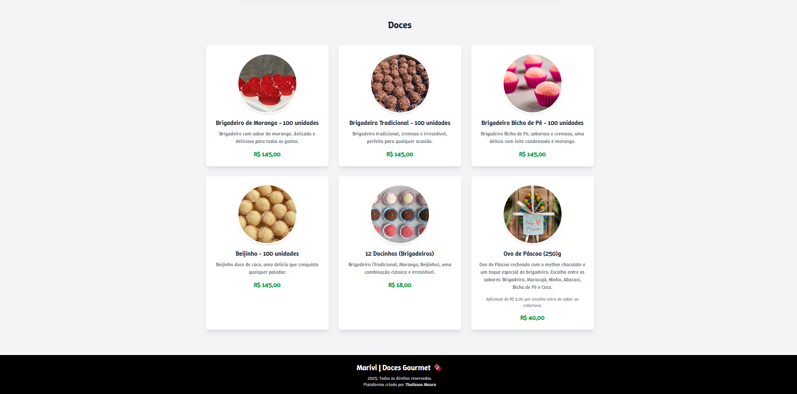
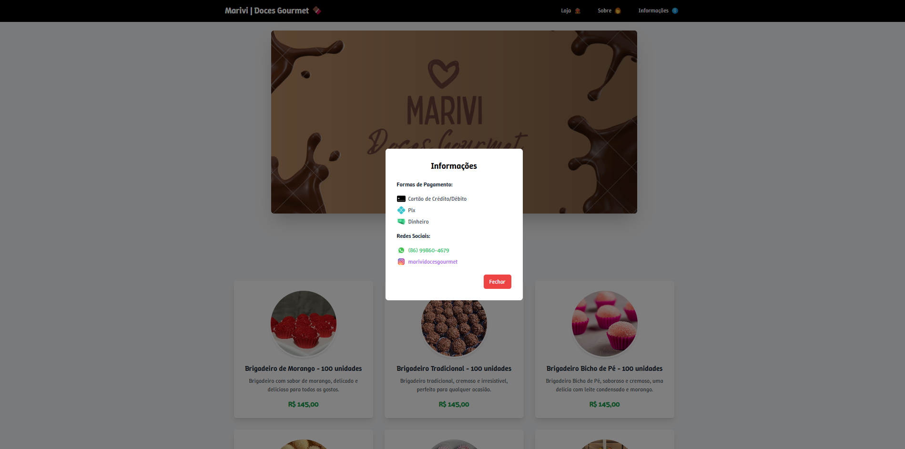
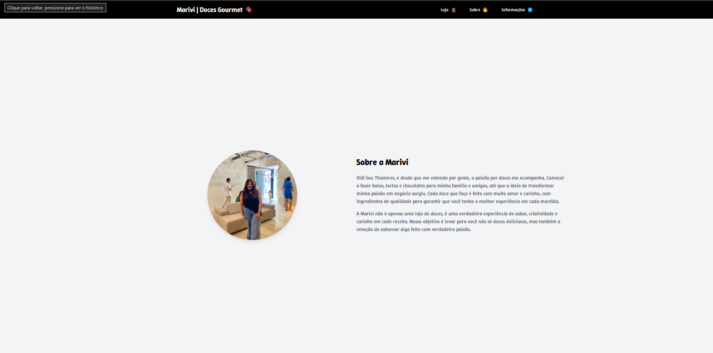
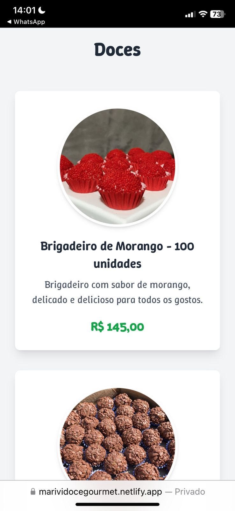
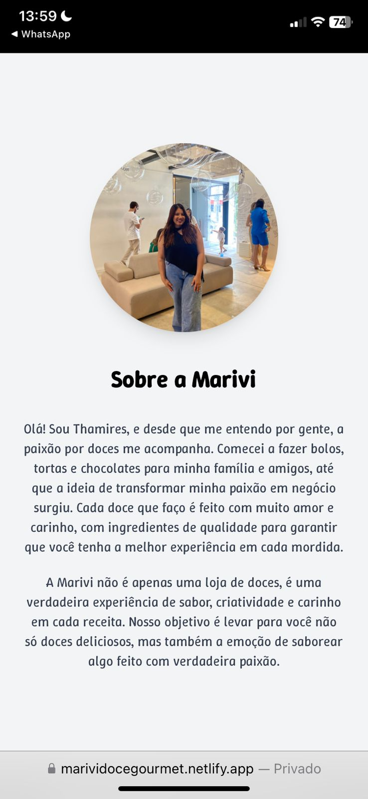
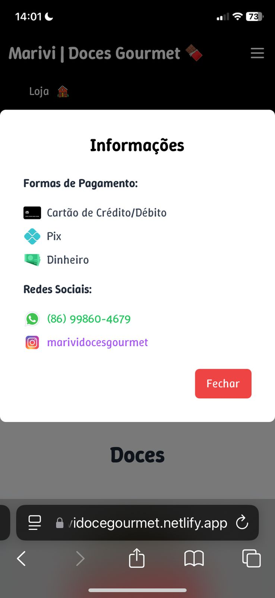
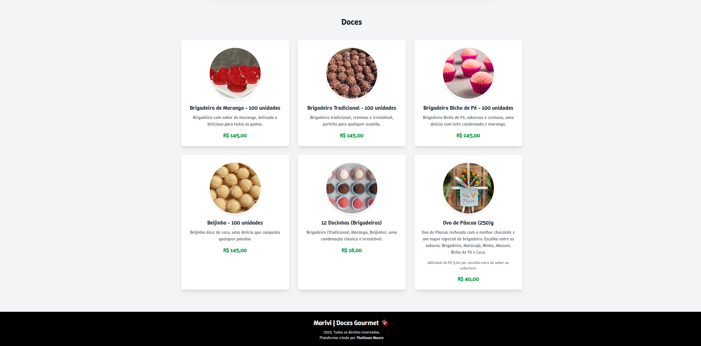
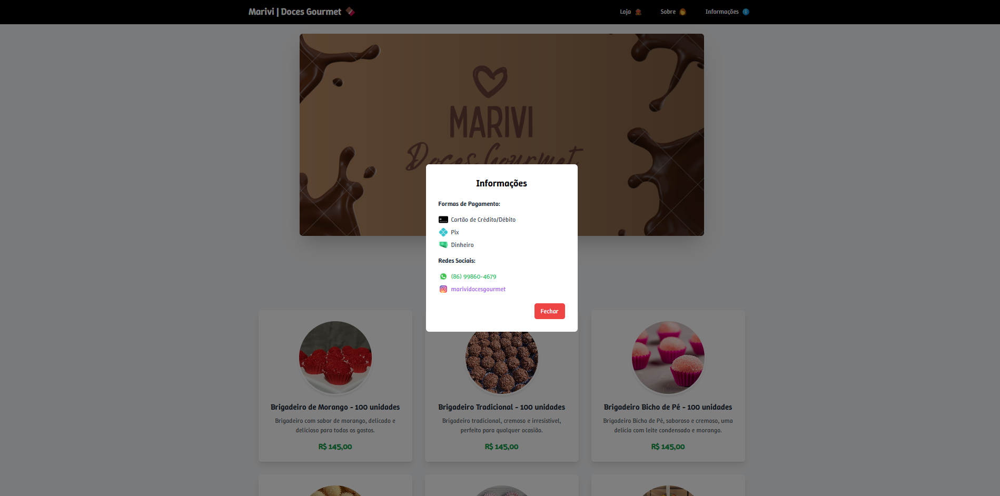
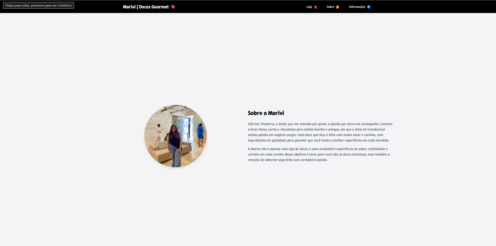
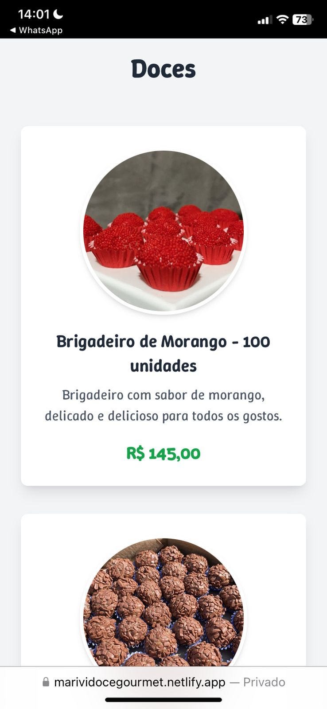
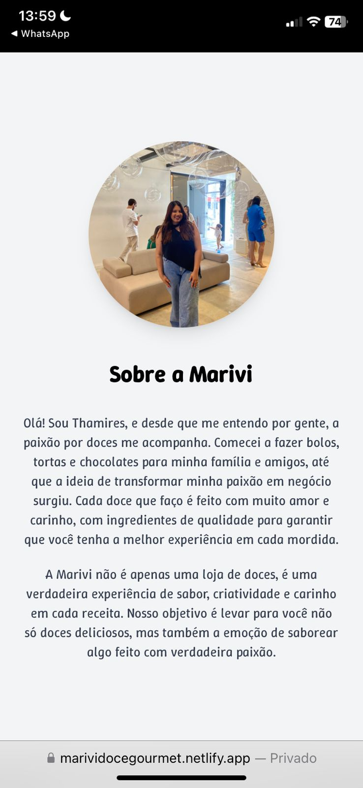
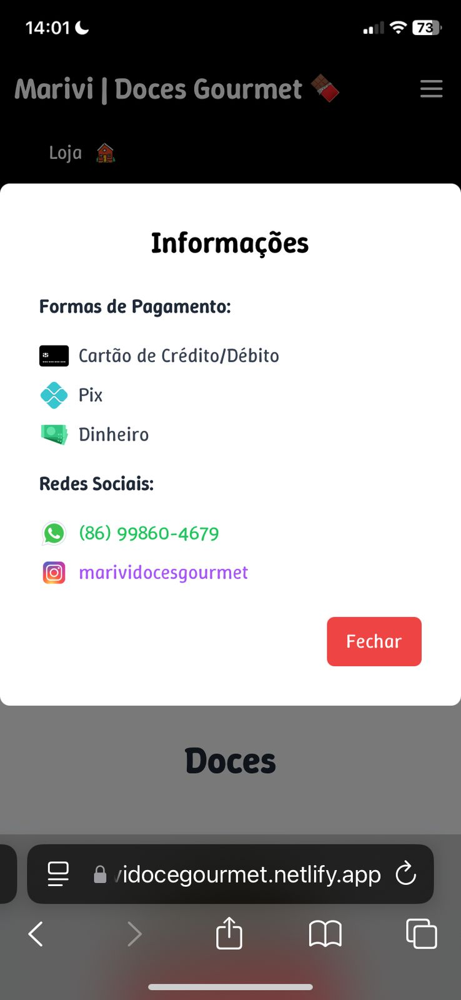
Você pode me encontrar nas seguintes redes sociais: